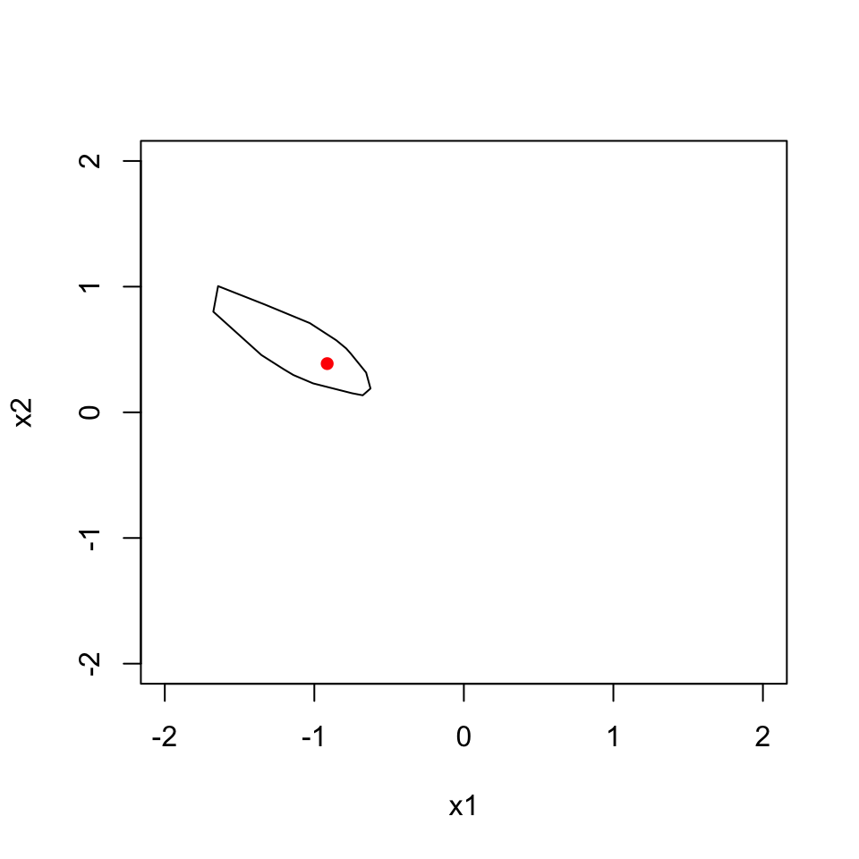

4. Main Function
BayesOptRegionQuad <- function(design, y, n_post, constr_lb, constr_ub, parallel = TRUE) {
# 1. draw posterior betas:
c(betas_post, beta_hat) %<-% draw_post_quad_2()
# 2. construct the map from beta to optimum
## initial solutions:
x0s <- generate_initial_solutions()
## objective function: see "quad_2"
## gradient of objective function: see "quad_2_grad"
## the map: see "beta2opt"
# 3. map posterior betas to optima
if(parallel) {
optima_post <- beta2opt_parApply()
} else{
optima_post <- beta2opt_apply()
}
optimum_mean <- beta2opt(beta_hat)
# 4. return
structure(
list(
optima_post = optima_post, optimum_mean = optimum_mean,
constr_lb = constr_lb, constr_ub = constr_ub
),
class = "bayescrquad"
)
}plot.bayescrquad <- function(res) {
ids <- list(id = grDevices::chull(res$optima_post)) %>%
map(~ c(.x, .x[1])) %>%
unlist()
plot(
NULL, type = "n", xlab = "x1", ylab = "x2",
xlim = c(constr_lb[1], constr_ub[1]), ylim = c(constr_lb[2], constr_ub[2])
)
lines(res$optima_post[ids, ], col = "black")
points(res$optimum_mean[1], res$optimum_mean[2], col = "red", cex = 1, pch = 16)
}# only for development
res <- BayesOptRegionQuad(
design = design, y = y, n_post = n_post, constr_lb = constr_lb, constr_ub = constr_ub
)
# # only for development
# BayesOptRegionQuad_benchmark <- purrr::partial(
# BayesOptRegionQuad, design = design, y = y, n_post = n_post, constr_lb = constr_lb, constr_ub = constr_ub
# )
# microbenchmark(
# m1 = BayesOptRegionQuad_benchmark(parallel = TRUE),
# m2 = BayesOptRegionQuad_benchmark(parallel = FALSE),
# times = 1
# )